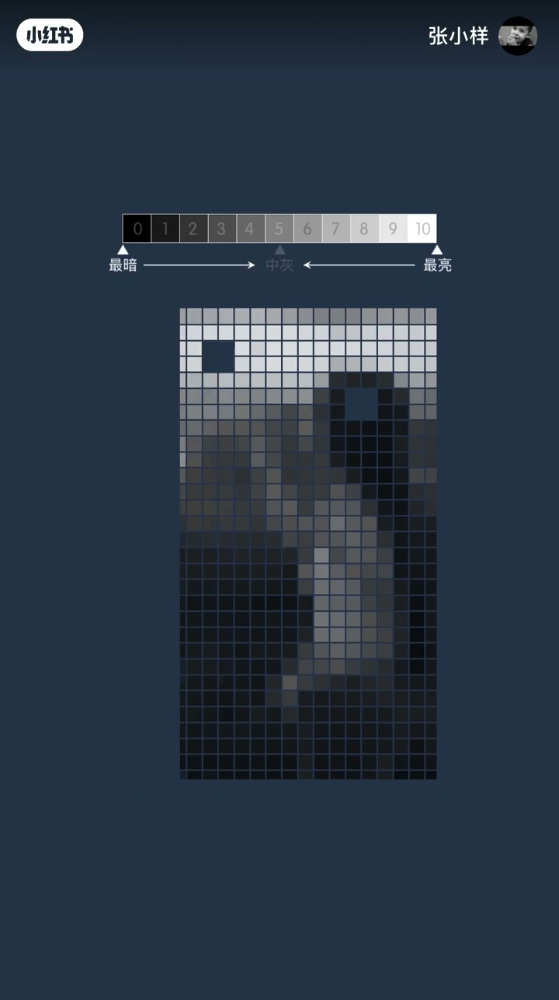
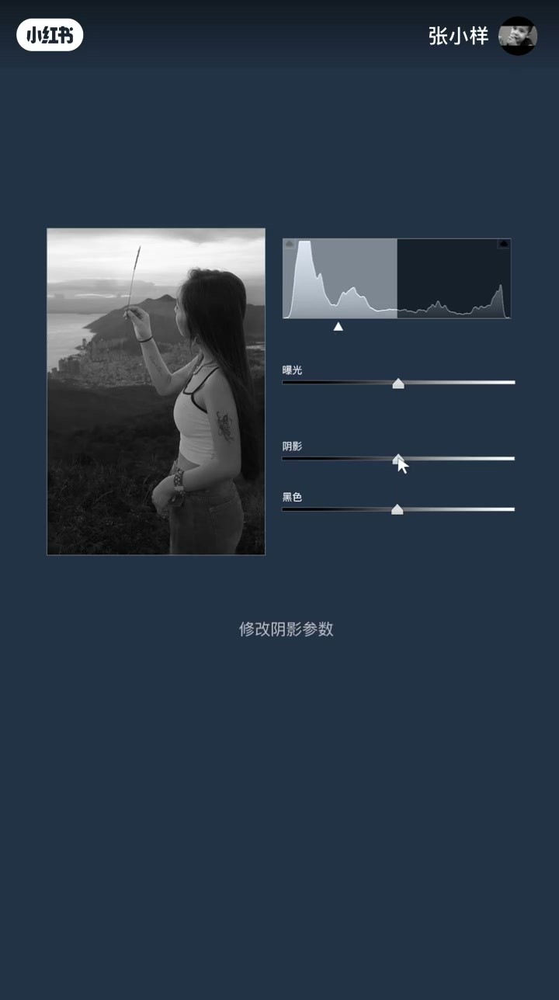
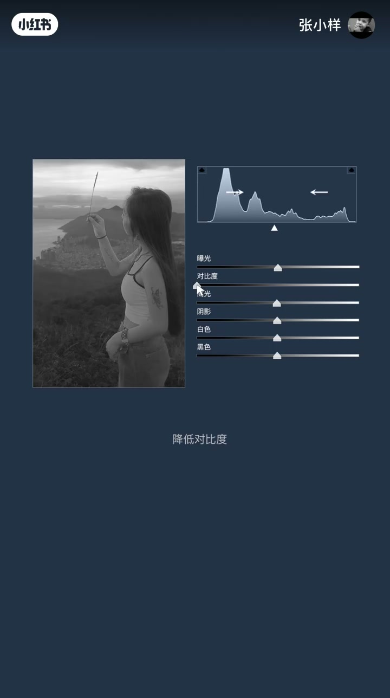
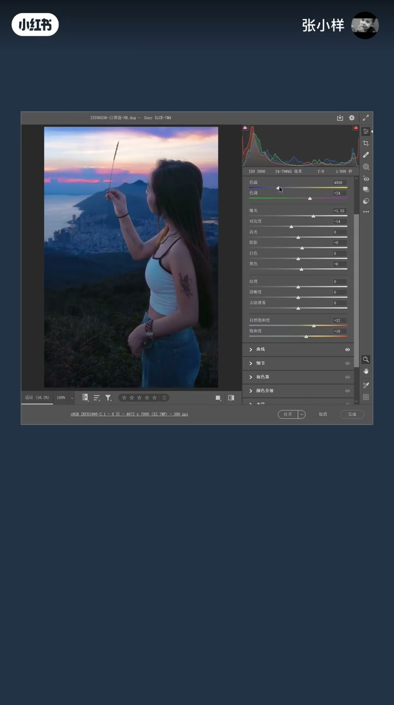

内容要点
一张普通的数码照片，做像素分阶处理，把最暗到最亮的过渡分成 11 份，就得到了直方图——这是看懂照片影调的钥匙。视频用极简动画式的讲解，把直方图原理、曝光/黑色/阴影/高光/白色五组参数对像素分布的影响、对比度的中性灰基准一次讲清，看完就能随手调整照片的影调风格。
知识结构
把照片从最暗到最亮分成11份，中间为中性灰，往暗为暗部、往亮为亮部；每个像素块按亮度从左到右排列就是直方图。
降低/提高曝光，所有像素向暗部或亮部靠近；修改黑色、阴影、高光、白色，对应最暗、暗部、亮部、最亮部分改变最多。
提高对比度让亮部更亮、暗部更暗，降低对比度反过来；基于以上概念随意调整影调风格。
直方图是把照片所有像素按亮度排布的一张「影调地图」：曝光、黑色、阴影、高光、白色五组参数分别拉动不同亮度区间，对比度则以中性灰为轴——理解了它，调色就不再靠感觉。
00:00-00:25直方图的显示原理
这是一张普通的数码照片，给它做一个像素分阶处理：把从最暗到最亮的过渡分成 11 份。
从最暗到最亮的中间部分为中性灰；从中性灰到最暗的部分为照片的暗部；从中性灰到最亮的部分为照片的亮部。
把照片的每个像素块，从最暗到最亮、从左到右依次排开——这就是直方图的显示原理。

00:26-00:50五组参数与像素分布
降低曝光，所有像素向暗部靠近；提高曝光，所有像素向亮部靠近。
修改黑色参数，最暗的部分改变最多；修改阴影参数，暗部改变最多；修改高光，亮部改变最多；修改白色，最亮的部分改变最多。

00:51-01:04对比度与影调风格
对比度是以中性灰作为界限：提高对比度，让亮部更亮、暗部更暗；降低对比度，让暗部变亮、让亮部变暗。
根据以上的概念，你就可以随意给照片调整影调风格。


完整转录（19段）
以下文本由 Whisper medium 模型自动转录，可能存在少量识别误差，已尽可能修正。
这是一张普通的数码照片
给它做一个像素号分割处理
把最暗到最亮的过渡分成11份
从最暗到最亮的中间部分为中性灰
从中性灰到最暗的部分为照片的暗部
从中性灰到最亮的部分为照片的亮部
把照片的每个像素块从最暗到最亮从左到右依次排开
这就是指方图的显示原理
降低曝光,所有像素向暗部靠近
提高曝光,所有像素向亮部靠近
修改黑色参数,最暗的部分改变最多
修改阴影参数,暗部改变最多
修改高光,亮部改变最多
修改白色,最亮的部分改变最多
对比度是从中性灰作为界限
提高对比度,让亮部更亮,暗部更暗
降低对比度,让暗部变亮,让亮部变暗
根据以上的概念,随意给照片调整影调风格
小红书